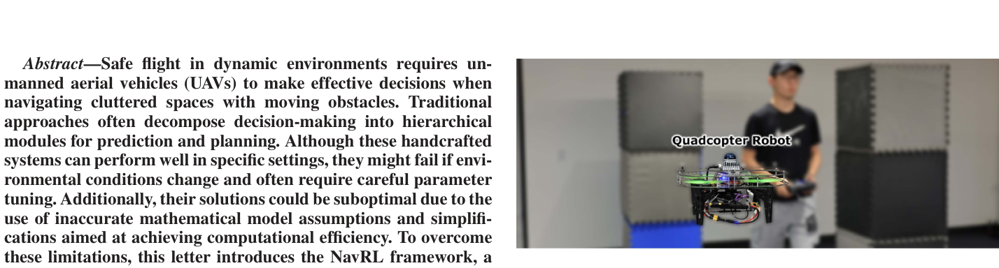
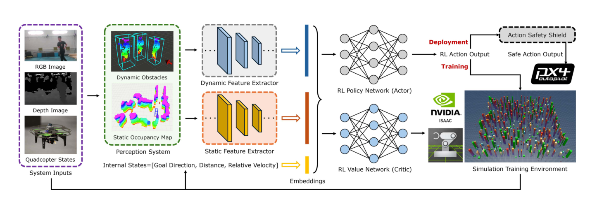
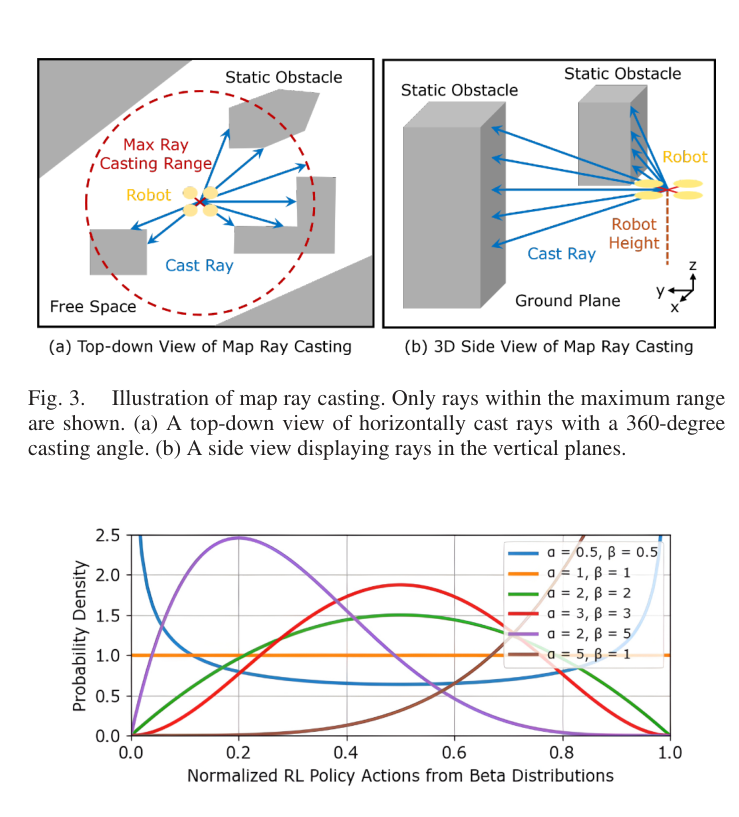
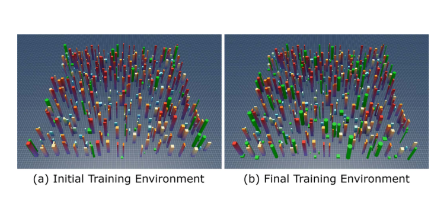
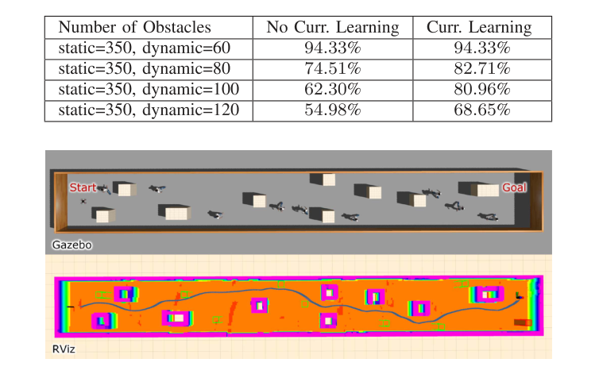
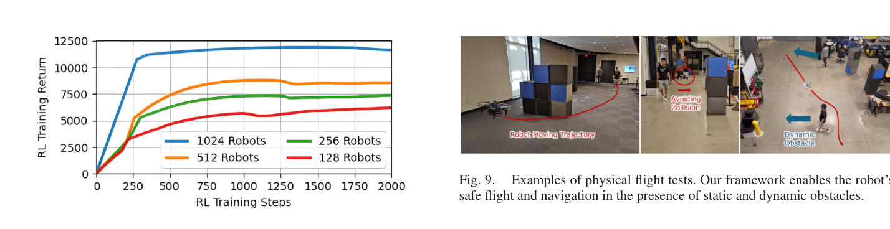

| 项目 | 内容 |
|---|---|
| 论文标题 | NavRL: Learning Safe Flight in Dynamic Environments 中文译名：NavRL——在动态环境中学习安全飞行 |
| 作者 | Zhefan Xu（徐哲凡，IEEE Graduate Student Member）、Xinming Han、Haoyu Shen、Hanyu Jin、Kenji Shimada；通讯作者：Zhefan Xu |
| 单位 | 卡内基梅隆大学（Carnegie Mellon University, CMU） 机械工程系（Department of Mechanical Engineering），美国匹兹堡 PA 15213 |
| 发表信息 | IEEE Robotics and Automation Letters (RA-L)，2025 年，Vol. 10, No. 4, pp. 3668–3675（2024-09-23 投稿；2025-02-11 接收；2025-02-26 在线；2025-03-10 当前版本） |
| DOI / 链接 | 10.1109/LRA.2025.3546069 ｜ IEEE Xplore 记录：document/10904341 |
| arXiv | arXiv:2409.15634（预印本，本地同目录存有 navrl_arXiv2409.15634.pdf，与正式版内容基本一致，可对照阅读） |
| 本地 PDF | 7.RAL-2025-NavRL_ Learning Safe Flight in Dynamic Environments.pdf（IEEE RA-L 正式发表版，8 页；本文所有页码、图号、表号均以此版为准） |
| 代码仓库 | github.com/Zhefan-Xu/NavRL（官方开源：Isaac Sim 训练管线 + ROS1/ROS2 部署包 + 预训练权重 + 3 分钟可跑的 Python demo；本地已完整 clone） |
| 补充材料 | 实验视频 youtu.be/EbeJW8-YlvI（B 站 BV1gsA9eTErz）；RA-L 页面另提供 supplementary downloadable material |
| 一句话摘要 | 用 PPO 训练一个速度级（velocity-level）四旋翼导航策略：静态障碍用占据栅格的射线距离图表示、动态障碍用含速度的定长结构向量表示，在目标坐标系下由 Beta 分布策略输出归一化速度；部署时再用速度障碍（velocity obstacle）半平面 + 线性规划把网络动作投影到安全区。Isaac Sim 中 1024 架并行训练约 10 小时，实现 sim-to-sim（Gazebo）与 zero-shot sim-to-real 飞行，动态/混合环境中平均碰撞次数最少（0.85 / 2.10 次）。 |
[6]）、对比学习（[40]）；本文干脆把观测再抽象一层，变成射线距离，让仿真与现实的接口变成"几何量"而不是"光度量"。[42]）或可达集投影（[13]），前者不可验证、后者计算量随动作维数指数增长；本文选了 1998 年就成熟的速度障碍，在速度空间里它是半平面，于是"安全"退化成"3 维 LP"，2 ms 可解。needSolve 标志：只有当策略动作落进某个速度障碍区域（inVO == true）时才调用 LP；否则原样放行。这是典型的最小干预（minimal intervention）原则——既保住了 RL 策略的灵活性，又把求解频率压到很低。作者在文中也承认：单个半平面约束在障碍多时会过度保守，但"策略只偶尔失败"，所以这种保守对整体性能影响不大。
| 灵感来源 | 启发了什么 | 类型 |
|---|---|---|
速度障碍（Fiorini & Shiller, IJRR 1998, [18]） | 把"未来会不会撞"变成相对速度空间里的一个锥形禁区：只要相对速度不落在锥内，τ 秒内就不会碰撞。这把时间维度的预测问题压缩成一个瞬时几何判定，是护盾的全部理论基础。 | 概念 |
ORCA / RVO2（van den Berg et al., ISRR 2011, [46]） | 把 VO 的锥形禁区进一步松弛成半平面，并给出"最小速度改变量 ΔV"的闭式构造；本文直接沿用其半平面几何与 LP1–LP4 增量式线性规划（仓库 solver.h 与 RVO2 的实现逐行对应）。 | 算法 |
Beta 分布策略（Chou et al., ICML 2017, [45]） | 动作被限制在 $[0,1]^3$ 时，高斯策略在边界处会被截断而产生有偏梯度；Beta 分布的支撑恰为 $[0,1]$，被证明是无偏且收敛更快的参数化。 | 方法 |
EGO-Planner（Zhou et al., RA-L 2021, [48]）与 ViGO（Xu et al., ICRA 2023, [20]） | 作为对照基线存在，但同时暴露了一个结构性事实：基于 ESDF / 栅格增量的优化式规划器在动态障碍噪声下会"卡住"（EGO 在动态/混合环境中直接 N/A）。这正是"学习式方法值得做"的最强论据。 | 对照 |
OmniDrones（B. Xu et al., RA-L 2024, [41]）与 Isaac Sim | 提供了 GPU 并行的四旋翼 RL 训练底座；本文在其上实现 1024 架并行、GPU 物理缓冲、每步 16 ms 的闭环。 | 工程 |
FAST-LIO2（Xu et al., T-RO 2022, [47]） | 把"我在哪"外包给 LiDAR-惯性里程计，使策略只需关心"相对目标的几何"，不必自己学状态估计——这是它能做到 zero-shot 的前提之一。 | 系统 |
| 课程学习（curriculum learning） | 动态障碍是训练难点，于是从 60 个起步，成功率超过 80% 就 +20，直到 120 个。用"难度旋钮"换取收敛稳定性。 | 训练策略 |
| 维度 | 传统分层（预测-规划-控制） | 纯端到端 RL | NavRL（本文） |
|---|---|---|---|
| 观测 | 点云/栅格/检测框，人工设计特征 | 图像或深度图，端到端 | 静态：射线距离矩阵 $N_h\times N_v$；动态：定长结构向量 $N_d\times M$ |
| 安全从哪来 | 硬约束（碰撞检测 + 轨迹可行性） | 奖励整形（软约束，无保证） | 奖励 + 部署期几何投影（半平面 LP） |
| 参数 | 大量手工阈值，环境一变就要重调 | 几乎无手工参数，但需大量数据 | 少量物理参数（τ、安全距离、$v_{lim}$）+ 一次训练 |
| 计算 | 优化迭代，毫秒~几十毫秒，随障碍数增长 | 一次前向，1 ms 级 | 前向 1 ms + 护盾 2 ms（桌面 GPU） |
| 动态障碍 | 需显式预测模块，误差会级联 | 隐式学习，可能"看不见"速度 | 速度显式进入状态，并在护盾里显式使用 |
| sim-to-real | 不涉及（模型即现实假设） | 通常需要域随机化/蒸馏 | 表示层天然对齐 → zero-shot |
| 可验证性 | 强（可检查每一步约束） | 弱（黑箱） | 弱→中：护盾这一步是可检查的，但"安全"仍依赖常速假设 |
[36]）又不能处理复杂静态场景，[42] 则把动态障碍当静态处理，性能次优。[13]）需要预计算可达集，代价随动作维数指数增长。NavRL 的架构可以概括为"两路感知 → 两路特征 → 一个策略 → 一层护盾"。注意训练与部署共享同一套状态/动作定义，区别只在于：训练时状态由 Isaac Sim 的 RayCaster 直接给出真值射线，部署时由占据栅格的射线投射服务给出；训练时动作直接进物理引擎，部署时动作先过护盾再发给 PX4。
flowchart LR
subgraph IN["输入"]
CAM["RGB-D 相机"]
LIO["FAST-LIO2 位姿"]
end
subgraph PER["感知：动静分流（本文创新）"]
STA["占据栅格
射线投射"]
DYN["集成检测
卡尔曼跟踪"]
end
subgraph NET["决策网络"]
FEAT["双分支特征"]
PPO["PPO Actor-Critic"]
end
subgraph DEP["部署（本文创新）"]
SH["安全护盾
VO + 线性规划"]
PX4["PX4 速度控制"]
end
CAM -->|"深度图"| STA
CAM -->|"深度图"| DYN
LIO -->|"位姿"| STA
LIO -->|"位姿"| DYN
STA -->|"射线距离"| FEAT
DYN -->|"框与速度"| FEAT
FEAT -->|"状态向量"| PPO
PPO -->|"期望速度"| SH -->|"安全速度"| PX4
classDef base fill:#e8f0fe,stroke:#3b82f6,stroke-width:2px,color:#1d4ed8
classDef nov fill:#ffeaf0,stroke:#f43f5e,stroke-width:2px,color:#be123c
class CAM,LIO,FEAT,PPO,PX4 base
class STA,DYN,SH nov
怎么读：玫红色是本文的创新模块——左侧"静态走栅格、动态走检测跟踪"的动静分流双表征（各喂一条特征分支），右侧只在部署端接上的安全护盾；蓝色是现成的相机、位姿估计、网络与飞控。两路感知都同时消费深度图与位姿，所以相机和位姿各引出两条边。
输入：深度图 + 位姿；输出：$N_h\times N_v$ 的射线距离矩阵、以及给护盾用的射线端点集合。
intbound / tMax / tDelta 那一套），命中即返回。ros1/map_manager/include/map_manager/occupancyMap.cpp、ros1/map_manager/include/map_manager/raycast.{h,cpp}、服务定义 ros1/map_manager/srv/RayCast.srv；参数在 ros1/map_manager/cfg/occupancy_map_param.yaml（分辨率 0.1 m、地图 60×60×5 m、量程 5.0 m、$p_{hit}=0.70$、$p_{miss}=0.35$、$p_{min}=0.12$、$p_{max}=0.97$）。输入：深度图（点云）；输出：动态障碍的中心位置、包围盒尺寸、速度（世界系）。
ros1/onboard_detector/include/onboard_detector/uvDetector.cpp、dbscan.cpp、dynamicDetector.cpp、kalmanFilter.cpp；YOLO 在 ros1/onboard_detector/scripts/yolo_detector/（ShuffleNetV2 主干 + 预训练权重）。该模块源自作者前作 [43]（RA-L 2024）。输入：位姿、速度、目标点、两路感知结果；输出：三组张量（state 8 维、lidar 1×36×4、dynamic_obstacle 1×5×10）。
facing_yaw = atan2(diff_y, diff_x)），并把目标方向缓存为 target_dir，后续所有相对位置/速度都用 vec_to_new_frame 投到该系。isaac-training/training/scripts/env.py（_compute_state_and_obs），部署 ros1/navigation_runner/scripts/navigation.py（get_action）。输入：三组状态；输出：Beta 分布的 $(\alpha,\beta)$，以及状态价值 $V(s)$。
ppo.py）：Conv2d(4, k=5×3) → ELU → Conv2d(16, k=5×3, s=2×1) → ELU → Conv2d(16, k=5×3, s=2×2) → ELU → flatten → Linear(128) → LayerNorm，输入 1×36×4 经三层后为 16×9×2=288 维，压到 128。MLP(128, 64)（LeakyReLU + LayerNorm），得到 64 维。注意：论文写"两个特征提取器都是 3 层 CNN"，但仓库里动态分支实际是 MLP——因为 $N_d\times M$ 已经是结构化浅层向量，再做卷积没有意义。MLP(256, 256) → 分别接 Actor 头（$\alpha,\beta$，$\alpha=1+\mathrm{softplus}(\cdot)+\epsilon$，保证 $\alpha,\beta\ge 1$ 即单峰）与 Critic 头（Linear→1）。isaac-training/training/scripts/ppo.py、utils.py（BetaActor / IndependentBeta / ValueNorm / GAE）；部署端同一份结构在 ros1/navigation_runner/scripts/ppo.py，权重 ros1/navigation_runner/scripts/ckpts/navrl_checkpoint.pt（723 KB）。输入：策略速度 $V_{rl}$、机器人位置/半径、动态障碍（位置/速度/尺寸）、静态射线端点；输出：安全速度 $V_{safe}$。
linearProgram1/2/3/4——在"速度球 $\lVert v\rVert\le v_{max}$"与若干半平面的交集上，找离 $V_{rl}$ 最近的点。$v_{max}$ 在部署时取 $\sqrt{3}\,v_{lim}\approx 3.46$ m/s（三维速度球的半径）。ros1/navigation_runner/include/navigation_runner/safeAction.cpp（getORCAPlane / getSafeAction / getSafeActionMap）、solver.h、服务节点 src/safe_action_node.cpp；参数 ros1/navigation_runner/cfg/safety/safe_action_param.yaml（$\tau=2.0$ s、$dt=0.05$ s、高度 $[0.7,1.3]$ m、安全距离 0.3 m、use_safety_in_static: true）。dt=0.016 s（62.5 Hz），episode 上限 2200 步。env.num_envs=1024、env_spacing=8.0、GPU 物理缓冲（gpu_max_rigid_contact_count=524288 等）写死在 sim.yaml。isaac-training/training/scripts/train.py（入口）、env.py（环境/奖励/终止）、ppo.py（算法）、eval.py；配置 training/cfg/{train,ppo,drone,sim}.yaml。roslaunch uav_simulator start.launch → roslaunch navigation_runner safety_and_perception_sim.launch → rosrun navigation_runner navigation_node.py，用 RViz 的 2D Nav Goal 给目标。ros2 launch navigation_runner perception.launch.py / safe_action.launch.py / navigation.launch.py。这说明框架本身与平台无关——只要下层接受速度指令。cd quick-demos && python simple-navigation.py / random-navigation.py / multi-robot-navigation.py，用的是 quick-demos/ckpts/navrl_checkpoint.pt 和内置的 2D 仿真 quick-demos/env.py。3.1 是"系统由什么组成"的静态视图，这里是"一帧之内怎么走"的动态视图（训练闭环见 6.5 节）。关键在正中间那个判定框：策略的速度指令先问"落不落在速度障碍区里"，不在就原样执行，落进去了才用一次线性规划把速度投影到最近的可行点——护盾平时不干扰策略，只在危险帧接管，这正是它能不加训练就叠到任意速度型策略上的原因。
flowchart LR IMG["深度图 + 位姿"] --> REP["动静双表征"] REP -->|"状态向量"| POL["策略前向
取 Beta 均值"] POL -->|"期望速度"| CHK{"落入速度障碍？"} CHK -->|"否"| UAV["PX4 执行"] CHK -->|"是"| LP["线性规划投影
最近安全速度"] REP -->|"射线 + 障碍球"| LP LP -->|"安全速度"| UAV UAV -.->|"下一帧"| IMG classDef base fill:#e8f0fe,stroke:#3b82f6,stroke-width:2px,color:#1d4ed8 classDef nov fill:#ffeaf0,stroke:#f43f5e,stroke-width:2px,color:#be123c class IMG,REP,POL,UAV base class CHK,LP nov
怎么读：最下面那条虚线是闭环本身（约 10~15 Hz）；玫红色的两个节点就是护盾——它既需要策略的速度指令，也需要感知给出的射线端点与障碍球，所以从感知层单拉了一条边直接进 LP。
| 环节 | 真实路径 / 命令 |
|---|---|
| 训练入口 | cd NavRL/isaac-training && python training/scripts/train.py（默认 2 架，用于验证安装） |
| 正式训练（论文配置） | python training/scripts/train.py headless=True env.num_envs=1024 env.num_obstacles=350 env_dyn.num_obstacles=80 wandb.mode=online |
| 训练超参 | isaac-training/training/cfg/ppo.yaml（clip 0.1、lr 5e-4、action_limit 2.0、dyn_obs_num 5、32 帧、4 epoch、16 minibatch） |
| 环境/奖励 | isaac-training/training/scripts/env.py（第 437–590 行是状态与奖励的全部实现） |
| 部署（ROS1） | ros1/navigation_runner/scripts/navigation_node.py + navigation.py；护盾 ros1/navigation_runner/src/safe_action_node.cpp |
| 护盾参数 | ros1/navigation_runner/cfg/safety/safe_action_param.yaml |
| Demo（3 分钟） | conda activate NavRL && cd quick-demos && python simple-navigation.py |
| ROS2（四足） | ros2 launch navigation_runner navigation.launch.py（需先起 isaac-go2-ros2） |
nvcr.io/nvidia/isaac-sim:2023.1.0-hotfix.1 获取——版本不匹配会直接报错。如果只想跑通推理，直接用 quick-demos/ 即可，它不依赖 Isaac Sim、也不需要 GPU。
在未知、含静态与动态障碍的三维空间里，让四旋翼从起点飞到目标点：不碰撞、不绕远、不飞太高，并且只用机载深度相机 + 本体状态（不用 GNSS、不用事先建图）。输入是 $(640\times480)$ 深度图与机器人位姿/速度，输出是世界系速度指令 $\mathbf{V}_{ctrl}\in\mathbb{R}^3$。
论文把它写成标准 MDP 五元组 $(\mathcal{S},\mathcal{A},P,R,\gamma)$：$\mathcal{S}$ 为状态空间（内部状态 + 感知数据），$\mathcal{A}$ 为动作空间，$P(s_{t+1}\mid s_t,a_t)$ 为转移，$R(s_t,a_t)$ 为奖励，$\gamma$ 为折扣因子。目标是学一个策略最大化期望累计奖励：
状态由三部分组成，且全部在目标坐标系 $(\cdot)^{G}$ 下表达——原点在起点，$x$ 轴指向目标，$y$ 轴平行地面。
env.py 中 drone_state = cat([rpos_clipped_g, distance_2d, distance_z, vel_g])，且 observation_dim = 8）。拆分的好处是让网络不必自己从 3 维向量里"减去"竖直分量。
action_limit: 2.0） |
输出在目标系，需再旋到世界系。作者强调这种写法的好处：改速度上限不用重训——只改 $v_{lim}$ 这个标量即可，而"直接输出速度值"的策略把极限学进了网络权重里，改不动。
奖励是 5 项加权和（式 (7)–(12)，逐项在 §6.4 展开），终止条件则有四条，全部写在 env.py 第 570–587 行：
| 事件 | 判定（代码实测） | 后果 |
|---|---|---|
| 静态碰撞 | lidar_scan.max() > lidar_range − 0.3（即任一射线短于 0.3 m，0.3 m 为碰撞半径） | terminated，episode 立即结束 |
| 动态碰撞 | 水平距离 $\le$ 半宽 + 0.3 且 竖直距离 $\le$ 半高 + 0.3 | terminated |
| 到达目标 | $\lVert \mathbf{P}_g-\mathbf{P}_r\rVert < 0.5$ m | 记入成功率统计（不终止训练，靠超时截断） |
| 越界 | $z<0.2$ m 或 $z>4.0$ m | terminated |
| 超时 | 步数 $\ge$ max_episode_length = 2200 | truncated（$\approx 35.2$ s @ 62.5 Hz） |
# self.reward[collision] -= 50. 是被注释掉的。也就是说，"撞了会怎样"完全由丢失未来奖励（value 归零）来表达。这解释了为什么必须训练足够久（10 小时、$1.2\times10^9$ 帧）：安全行为是从"撞了就没了"这件事里反推出来的，而不是被一个大的负数"推"出来的。
| 任务 | 代表工作 | 与本文的差别 |
|---|---|---|
| 静态局部规划 | EGO-Planner [48] | 只对静态地图做梯度优化；没有"障碍速度"概念，动态物会被当成会移动的墙，导致地图反复重规划甚至卡死。本文把它当作静态环境的对照基线。 |
| 经典动态避障 | VO [18] / ORCA [46] | 只有几何、没有"目标导向"的全局意图；容易在密集人群里震荡或死锁。本文只把 VO 当安全带，方向由策略决定。 |
| 视觉导航（监督式） | DroNet [24]、MonoNav [30] | 需要人工标注或深度估计模块；泛化受数据分布限制。本文用仿真自采数据、无需标注。 |
| 敏捷飞行 RL | Kaufmann et al., Nature 2023 [37] | 目标是"最快穿越固定赛道"，环境已知、无障碍不确定性；本文是"未知环境 + 移动障碍 + 安全优先"。 |
| 安全 RL（投影类） | Kochdumper et al. [13]、Agile-but-Safe [42] | 前者用可达集投影，代价随动作维数指数增长；后者用 recovery policy，且把动态障碍当静态。本文用 VO 半平面 + LP，代价与障碍数线性、与维数无关。 |
| 本文 | NavRL | 未知环境 + 静/动态混合 + 速度级接口 + 几何护盾 + zero-shot 真机，四项同时满足。 |
论文在引言里明确列了三条（sim-to-real、黑箱安全、采样效率），实际实现中还有两条没被写成"挑战"但同样致命（表示冲突、接口设计）。下面逐条拆：为什么难 → 论文怎么绕 → 代价是什么。
[4][5][6]），要么干脆在真实世界训练（[7][8][9]）——前者调参玄学，后者数据效率极低（机器人一小时只能采几千步，还冒着撞坏的风险）。
论文的绕法：不在像素层对齐，而在几何层对齐。感知模块把深度图"编译"成两种与渲染无关的量：射线距离（米）和障碍包围盒 + 速度（米、米/秒）。策略看到的从来不是图像，而是"我周围 4 m 内每个方向有多远"。仿真里的 RayCaster 和现实里的栅格射线投射输出的是同一种物理量，唯一差别是噪声统计。
论文的绕法：在动作输出后串一个基于速度障碍的安全护盾。VO 把"τ 秒内会不会撞"变成相对速度空间里的锥形禁区；ORCA 再把锥松弛成半平面，于是"找一个安全速度"变成一个凸的 3 维 LP：目标是最小化与策略动作的偏差，约束是若干半平面 + 速度球。
论文的绕法：Isaac Sim 里1024 架同时训练（env.num_envs=1024，占满 RTX 4090 显存），每架独立随机出生点/目标点，32 帧 rollout 后做 4 个 epoch、16 个 minibatch 的 PPO 更新。配合课程学习：动态障碍从 60 起步，成功率超过 80% 才 +20。
论文的绕法：两套表示、两条通路。静态走"体素 + 射线"，动态走"检测 + 跟踪 + 定长向量"；并且在静态地图更新时，主动遍历动态障碍包围盒把其中的体素清空（occupancyMap 中的 dynamic map 擦除逻辑）。
论文的绕法：① 障碍取最近的 $N_d=5$ 个，不足补零、超范围置零，形成一个 $5\times10$ 的定长矩阵——"零"在物理上表示"这里没有障碍"，网络可以学会忽略；② 动作改用 Beta 分布，支撑天然是 $[0,1]$，再做仿射映射到 $[-v_{lim},v_{lim}]$，论文引用 [45] 说明其无偏且收敛更快。
range_mask 来区分（代码里确实有 dyn_obs_range_mask）；③ Beta 分布默认单峰（$\alpha,\beta\ge1$），无法表达"左右都行"的多峰决策。
| 挑战 | 本质 | 论文的解法 | 残留代价 |
|---|---|---|---|
| sim-to-real | 像素级域差 | 几何级表示（射线 + 框） | 语义/细结构丢失 |
| 黑箱安全 | 无形式化保证 | VO 半平面 + LP 投影 | 常速假设、不可行时失效 |
| 训练吞吐 | 样本相关、收敛慢 | 1024 并行 + 课程学习 | 硬件绑定、阈值手工 |
| 表示冲突 | 静/动态几何属性不同 | 双表示 + 动态框擦除 | 擦除误差、圆包保守 |
| 接口定长 | 变长障碍 + 有界动作 | Top-$N_d$ 补零 + Beta 策略 | 只看 5 个、单峰 |
整篇方法可以拆成四件事：① 用 PPO 在仿真里优化一个随机策略；② 用 Beta 分布把动作约束在归一化区间；③ 用 5 项奖励把"快、稳、安全、别飞高"写进去；④ 部署时用 VO + LP 把动作"夹"回安全区。下面按这四件事逐个给公式。
论文只写了"基于 PPO [17]"，没有展开损失。仓库 ppo.py 里是标准实现（截断代理 + GAE + Huber 值损失 + 熵正则）：
GAE(0.99, 0.95)） | $\delta_t$ = TD 误差 |
$\lambda$ 在"偏差"与"方差"之间折中：越接近 1 越依赖长期回报，梯度噪声越大。这里 $\lambda=0.95$ 是偏保守的选择。
训练时的几个工程细节（都写在 ppo.py / utils.py）：
ValueNorm 用运行均值/方差对 return 做标准化，再喂给 Huber 损失（delta=10）——避免 return 量级（$10^4$）把梯度放大。adv = (adv − mean) / std.clip(1e-7)，每个 rollout 内做一次。网络不直接输出速度，而是输出 Beta 分布的两个参数 $(\alpha,\beta)$，再从中采样归一化动作 $\hat{\mathbf{V}}\in[0,1]^3$：
[45] 说它无偏且收敛更快。代价是 Beta 的采样比高斯贵（要两次 Gamma 采样），但只在训练时付这个代价。
env.py 第 575 行给出了实现：
.clip(max=2.0) 被注释掉了），所以理论上鼓励一直全速——真正的限速来自动作映射 $v_{lim}$。
torch.log((lidar_range - lidar_scan).clamp(1e-6, lidar_range)).mean((2,3)) 完全对应，其中 lidar_scan = range − distance。
lidar_range 填充，相当于"当作 4 m 远"）。height_range ± 0.2 之外才开始罚），避免在边界上反复惩罚造成抖动；权重 8.0，是五项里最大的。
先把"会撞"翻译成几何。设机器人半径 $r_r$、障碍半径 $r_o$、相对位置 $\mathbf{p}_{ro}=\mathbf{P}_o-\mathbf{P}_r$、相对速度 $\mathbf{v}_{ro}=\mathbf{V}_r-\mathbf{V}_o$，则速度障碍定义为：
VO 有两个麻烦：它是锥（非线性），且"最小修正量"要解一个非凸问题。ORCA 的做法是把锥在"最接近相对速度的那条边界"处线性化成一个半平面，并给出修正量的闭式解：
getORCAPlane 的数学形式）
$$ \mathbf{u}=\left(R\cdot\frac{1}{\tau}-\lVert \mathbf{w}\rVert\right)\hat{\mathbf{w}},\quad \mathbf{w}=\mathbf{v}_{ro}-\frac{\mathbf{p}_{ro}}{\tau};\qquad
\mathcal{H}=\left\{\mathbf{v}\;\middle|\;\left(\mathbf{v}-\left(\mathbf{V}_{rl}+\mathbf{u}\right)\right)\cdot\hat{\mathbf{w}}\ge 0\right\} $$
linearProgram1→4：先在速度球上解 3 维 LP，失败则退到两个平面的交线解 1 维 LP，再失败则在两平面交点上解 0 维（直接取点）。整个过程没有迭代、没有初始猜测，最坏复杂度 $O(N^3)$ 但 $N$ 很小（几十个球），实测 2 ms。
plane.point = agentVel + u、plane.normal = unitW，约束是 $(\mathbf{V}_{safe}-\text{point})\cdot\mathbf{n}\ge0$，其中 $\mathbf{u}$ 已经在"相对速度空间"里算好、并直接加在机器人速度上（getORCAPlane 内部减去了 $\mathbf{V}_o$）。两者在"障碍匀速"假设下等价，但代码形式更接近 ORCA 原文，也更容易处理"机器人已在碰撞中"的退化情形。
flowchart TB
A["初始化 1024 个环境
随机位姿 / 目标 / yaw 对准目标"] --> B["采集 32 帧
（每帧 16 ms 物理 + 射线）"]
B --> C["存入 rollout buffer
obs / action / reward / done / value"]
C --> D["计算 GAE(γ=0.99, λ=0.95)
优势标准化 + return 归一化"]
D --> E["4 个 epoch × 16 个 minibatch
更新 actor / critic / feature extractor"]
E --> F{"成功率 > 80% ?"}
F -->|"是"| G["动态障碍 +20
（60→80→100→120）"]
F -->|"否"| H["继续同难度训练"]
G --> B
H --> B
E --> I["每 1000 步评估并存 checkpoint"]
I --> J["保存 best model
（100 动态障碍，80.96%）"]
classDef step fill:#e8f0fe,stroke:#3b82f6,stroke-width:2px,color:#1d4ed8
classDef dec fill:#fef7ed,stroke:#f59e0b,stroke-width:2px,color:#92400e
classDef out fill:#e6f7ee,stroke:#10b981,stroke-width:2px,color:#047857
class A,B,C,D,E step
class F dec
class G,H step
class I,J out
| 超参 | 取值 | 出处 |
|---|---|---|
| 最大速度 $v_{lim}$ | 2.0 m/s | 论文 §IV；ppo.yaml: action_limit |
| 折扣因子 $\gamma$ | 0.99 | 论文 §IV；GAE(0.99, 0.95) |
| PPO 截断 $\epsilon$ | 0.1 | 论文 §IV；ppo.yaml: clip_ratio |
| 学习率 | $5\times10^{-4}$（Adam） | 论文 §IV；actor / critic / extractor 各自独立优化器 |
| 特征维度 | 静态 128、动态 64 | 论文 §IV；ppo.py |
| 策略网络 | 2 层 MLP（各 256） | 论文 §IV；make_mlp([256,256]) |
| 并行环境数 | 1024 | 论文 §IV-A；env.num_envs |
| 静态 / 动态障碍 | 350 / 60→120 | 论文 §IV-A；train.yaml |
| 动态障碍槽位 $N_d$ | 5 | ppo.yaml: dyn_obs_num（论文只说"预定义"） |
| 物理步长 | 0.016 s（62.5 Hz） | sim.yaml: dt |
| episode 长度 | 2200 步 ≈ 35.2 s | train.yaml: max_episode_length |
| 每轮采集 / 更新 | 32 帧 / 4 epoch × 16 minibatch | ppo.yaml |
| 熵系数 | $10^{-3}$ | ppo.yaml |
| 训练总量 / 时长 | $1.2\times10^{9}$ 帧 / 约 10 小时（RTX 4090） | train.yaml: max_frame_num: 12e8；论文 §IV |
| 护盾时域 $\tau$ / 步长 | 2.0 s / 0.05 s | safe_action_param.yaml |
| 护盾高度区间 | [0.7, 1.3] m | safe_action_param.yaml |
| 安全距离 | 0.3 m | safe_action_param.yaml |
| 项目 | 论文表述 | 仓库实现 |
|---|---|---|
| 内部状态维度 | 式 (2)：3 + 1 + 3 = 7 维 | observation_dim = 8：距离拆成 $d_{2d}$ 与 $d_z$ |
| 动态状态维度 | 式 (4)：3 + 1 + 3 + 2 = 9 维 | 每槽 10 维：把宽度离散成"类别"、高度单独归一化 |
| 动态特征提取器 | "两个特征提取器都是 3 层 CNN" | 静态是 3 层 CNN；动态是 MLP(128,64) |
| 奖励权重 | 式 (7) 只给符号 $\lambda_i$ | $\lambda=[1,1,1,0.1,8]$ + 常数 +1 生存奖励 |
| 碰撞惩罚 | 未提及 | 无终止惩罚（−50 被注释掉），仅靠终止截断 |
这一节挑四个"真正的技术内核"讲透：为什么射线表示能跨过 sim-to-real、VO 到 LP 的完整几何链条、Beta 策略的梯度长什么样、1024 并行的账怎么算。目标是读完能自己写出来。
深度图的每个像素 $(u,v)$ 给的是沿该像素方向的深度 $z(u,v)$；由相机内参 $\mathbf{K}$ 与位姿 $\mathbf{T}_{wb}$ 可以反投影出世界系方向：
把 $\ell(u,v)$ 按"方位角 × 仰角"重采样成 $36\times4$ 的矩阵，就得到 $S_{stat}$。反过来，占据栅格的射线投射是沿同一方向做体素步进直到命中——两条路径输出同一个物理量：米。这就是 sim-to-real 的根：仿真与现实的接口不是像素，而是距离。
水平间隔 $10^\circ$、量程 $L=4$ m，则在距离 $L$ 处相邻两条射线的横向间距为：
仓库 raycast.cpp 用的是 Amanatides–Woo 体素遍历：给定起点与方向，维护三个方向的 tMax（下一次跨越体素边界的参数）与 tDelta（跨越一个体素所需的参数增量），每一步只推进最小的那个轴：
碰撞的充要条件（常速假设下）是"存在 $t\ge0$ 使相对位置进入膨胀圆盘"。于是 $VO^{\tau}$ 是一个锥 + 圆帽。判断一个相对速度是否在锥内，最省事的做法是看"截断圆心到相对速度的向量" $\mathbf{w}$：
getORCAPlane 里用 angleVO = asin(R/|p|) 与 angleVel = acos(p·v/(|p||v|)) 做比较，是同一个判据的三角形式。
锥是非线性的，直接做约束会让优化变成非凸。ORCA 的洞察是：只保留"当前相对速度所靠近的那条锥边界"，把约束线性化。具体做法是求"把 $\mathbf{v}_{ro}$ 推出圆盘的最小位移 $\mathbf{u}$"，然后以 $\mathbf{u}$ 的方向为法向、以 $\mathbf{V}_{rl}+\mathbf{u}$ 为平面上一点，得到半平面。这一步的代价是可行域变大（只切一刀，而不是切掉整个锥），但换来凸性 + 闭式解 + 可增量求解。
问题变成"在凸多面体 $\cap_i\mathcal{H}_i$ 与速度球 $\lVert\mathbf{v}\rVert\le v_{max}$ 的交集里，找离 $\mathbf{V}_{rl}$ 最近的点"。RVO2 的 linearProgram1..4 是一个降维枚举：
| 函数 | 几何含义 | 失败时怎么办 |
|---|---|---|
linearProgram2 | 在某个约束平面与速度球的交圆上，找离目标最近的点（2 维子问题） | 退到与另一平面的交线 |
linearProgram1 | 在一条直线上解 1 维问题（区间求交） | 返回 false，说明该平面组合不可行 |
linearProgram3 | 先解"无约束最优"，再逐个检查违反的约束，投影到对应平面 | 返回第一个失败的平面编号 |
linearProgram4 | 对失败的平面，构造"投影平面"再解一次，取最小违反量 | 仍可能不可行 → 输出"最不坏"的速度 |
linearProgram4 的语义是"最小化违反量"，不是"保证安全"。当障碍太密、半平面交集为空时，护盾输出的速度满足的是"违反得最少"，而论文没有给出这种情况下仍然安全的任何保证。所以严格说，NavRL 的安全性是"经验性的、在标称场景下有效的"，不是"可证明的"。读者若要在载人/高价值场景用它，必须自己补一层保守策略（例如不可行时直接悬停）。
VO 只对圆/球有闭式解。静态障碍是任意形状，所以护盾做了两级近似：
getSafeAction）：把射线端点做 DBSCAN 聚类，每簇算中心与外接半径，再把球心沿"机器人→簇心"方向外推一个半径、半径放大 1.5 倍，保证包住整个簇。getSafeActionMap）：若上游能给静态障碍的包围盒，则把它离散成一堆半径 0.1 m 的小球（xyz 三向网格），逐个建半平面。球多了 LP 会慢，但每个球都很小，保守性反而下降。safeAction.cpp（MIT/Apache 许可，见仓库 LICENSE）。
softplus 回传到网络。注意 $\log\hat{v}$ 项：当 $\hat{v}\to0$ 时它趋于 $-\infty$，但被 $(\alpha-1)$ 乘着，而 $\alpha\ge1$ 保证了系数非负——这就是"$\alpha,\beta\ge1$ 保证数值稳定"的真正原因。
训练时从 Beta 采样（探索），部署时取 $\mathbb{E}[\hat{v}]=\alpha/(\alpha+\beta)$。这一步有两个效果：① 确定性——同样的输入给同样的输出，消除了抖动；② 平滑——均值的方差比采样小得多，配合式 (11) 的平滑奖励，速度指令更接近"人开的"。代价是丢掉了多模态：如果真实最优是"从左绕或从右绕"，取均值会得到"从中间直冲"——这是 Beta 均值部署的经典陷阱。
alpha = 1 + softplus(layer(x)) + 1e-6，而不是常见的 softplus + 1 或 exp。加 1 的作用是把支撑从 $(0,1)$ 的"两端概率密度为 0"改成"允许均匀分布"：当 $\alpha=\beta=1$ 时 Beta 退化为均匀分布，对应"完全不知道往哪飞"的初始状态——这正是策略初始化时想要的。若不加 1，$\alpha,\beta\to0$ 会让分布变成 U 形（两端概率高），初始策略就会疯狂打舵。
把论文给的数字摊开算一遍，可以估出这套训练管线的"效率画像"（论文未给吞吐，以下为推算）：
max_frame_num 用满，单机等效仿真时长 = $1.2\times10^{9}/1024\times0.016\approx 1.875\times10^{4}$ s ≈ 5.2 小时。
| 资源/策略 | 取值 | 为什么是这个值 |
|---|---|---|
| 并行环境 | 1024 | 论文明确"用满了 4090 的显存"；再多会 OOM，再少收敛慢（图 8：1024 > 512 > 256 > 128） |
| 环境间距 | 8.0 m | 保证相邻环境的机器人/障碍不互相干扰，同时尽量紧凑以省显存 |
| rollout 长度 | 32 帧 | 0.512 s 仿真时间；太短则 GAE 偏差大，太长则样本过时 |
| 更新轮次 | 4 epoch × 16 minibatch | 每个 minibatch 约 2048 个样本；PPO 的经典配比 |
| 课程阈值 | 成功率 80% | 太低会"还没学会就加难度"，太高会"卡在简单场景" |
| 动态障碍增量 | +20 | 60→80→100→120，四档；作者说动态障碍比静态难得多 |
| 优先级 | 参数 | 为什么关键 |
|---|---|---|
| 1 | $v_{lim}=2.0$ m/s 与碰撞半径 0.3 m | 两者共同决定"反应时间预算"：2 m/s 下 0.3 m 只有 150 ms，护盾时必须算得比这快 |
| 2 | 护盾 $\tau=2.0$ s | 太小则"来不及"（人 1.5 m/s 走 2 s 是 3 m），太大则过度保守 |
| 3 | 射线 36×4、量程 4 m | 决定"能看见多细的障碍"，与训练/部署必须严格一致（否则策略输入分布错位） |
| 4 | $\lambda_5=8.0$（高度） | 五项里最大，若调小，策略会学会"从上面飞过去"的偷懒解 |
| 5 | $\gamma=0.99$、$\lambda_{GAE}=0.95$ | 有效视野约 $1/(1-\gamma)=100$ 步 ≈ 1.6 s，与护盾时域同量级，二者要匹配 |
本节的图来自论文正式版 PDF 的裁切（figures/ 目录，编号以 manifest.txt 为准）。需要说明：部分裁切图包含了相邻的图/表（例如 fig3.png 同时含 Fig. 3 与 Fig. 4，fig5.png 含 Table I 与 Fig. 7，fig6.png 含 Fig. 8 与 Fig. 9），图题已按实际内容标注。论文 Fig. 5（速度障碍示意）没有被裁切出来，本节用 Mermaid 按原图逻辑重绘。

本图展示了：实验平台的真实样貌——一台自组装四旋翼（绿色机架、板载计算机、前置深度相机），背景里有一名行人正朝机器人方向走动，两侧是叠放的蓝色箱体（静态障碍）。这张图的作用不是展示算法，而是锚定"零样本迁移"的可信度：证明实验不是纯仿真。

本图证明了：这是一套"训练/部署共用主干、仅末端分叉"的架构。左侧虚线框是系统输入（RGB、深度、机器人状态），中间绿色框是感知（动态障碍框 + 静态占据栅格），随后分成蓝、橙两条特征通路，与内部状态（黄色）拼接成 embedding，再送入灰色 actor 与蓝色 critic。右上角虚线框是只在部署时激活的安全护盾，右下角是 Isaac Sim 训练环境。
RL Action Output 之后、PX4 AUTOPILOT 之前。位置很关键——它在速度接口上，而不是在电机/姿态层，因此可以跨平台复用（ROS2 里换成四足也一样）。
本图解释了两件事：静态状态是怎么"扫"出来的，以及动作分布为什么能覆盖 $[0,1]$。
alpha = 1 + softplus(·) 保证 $\alpha\ge1$，所以 $(0.5,0.5)$ 这条 U 形曲线在实际训练中不会出现——这是作者刻意排除的（U 形会让初始策略倾向于极限动作）。
flowchart TB
A["机器人: 位置 P_r, 速度 V_r, 半径 r_r"] --> C
B["障碍 i: 位置 P_oi, 速度 V_oi, 半径 r_oi"] --> C
C["相对量: p_ro = P_oi − P_r
v_ro = V_r − V_oi"] --> D
D["膨胀半径 R = r_r + r_oi + d_safe
（d_safe = 0.3 m）"] --> E
E["VO 区域 = 圆锥 + 圆帽
锥半角 asin(R/‖p_ro‖)
帽半径 R/τ（τ = 2 s）"] --> F
F{"v_ro 落在 VO 内?"}
F -->|"否（安全）"| G["原样放行 V_rl"]
F -->|"是（危险）"| H["求最小修正 u
w = v_ro − p_ro/τ
u = (R/τ − ‖w‖)·ŵ"]
H --> I["半平面约束
(v − (V_rl + u))·ŵ ≥ 0"]
I --> J["LP: min ‖V_safe − V_rl‖
s.t. 所有半平面 ∩ ‖v‖ ≤ v_max"]
J --> K{"可行?"}
K -->|"是"| L["输出 V_safe"]
K -->|"否"| M["LP4: 最小违反解
（此时不保证安全）"]
M --> L2["输出 V_safe（降级）"]
classDef safe fill:#e6f7ee,stroke:#10b981,stroke-width:2px,color:#047857
classDef danger fill:#ffeaf0,stroke:#f43f5e,stroke-width:2px,color:#be123c
classDef geo fill:#e8f0fe,stroke:#3b82f6,stroke-width:2px,color:#1d4ed8
class G,L safe
class F,H,I,J,K geo
class M,L2 danger
原图（Fig. 5）画的是：左侧是机器人遇到两个不同速度障碍的俯视场景，右侧是对应的速度空间——两个 VO 区域各由"以 $C_1$/$C_2$ 为心的圆"（对应"已重叠/来不及"的帽区）与"从原点张开的锥"组成；红色与绿色箭头是相对速度，二者都落在 VO 内，说明"按当前速度走会撞"；蓝色箭头 $\Delta V_1,\Delta V_2$ 是退出各自 VO 所需的最小速度改变量。

本图展示了课程学习的两个端点：左图 (a) 初始环境 60 个动态障碍，右图 (b) 最终环境 120 个。静态障碍用红色系（颜色深浅表示高度），动态障碍用绿色，机器人是小小的白色方块。
static=350 固定，课程只调动态障碍）——因为作者观察到"动态比静态难"。这是一个很省的课程设计：只调最难的那个维度。
Table I 是本图最重要的信息：在相同训练时长下，课程学习在所有难度档都不劣于、且在中高难度显著优于无课程。图中上方是表格，下方是 Gazebo（上）与 RViz（下）的对照——这是sim-to-sim 迁移的直接证据（训练在 Isaac Sim，测试在 Gazebo）。

左图（Fig. 8）证明了"并行度不只加速、还提质"：四条曲线分别在约 250 步内快速上升，随后进入平台；1024 架的平台约 $1.15\times10^4$，512 约 $8\times10^3$，256 约 $7.2\times10^3$，128 约 $5.5\times10^3$。这不是"快慢"的差别，是"收敛到不同解"的差别。
实验设定：20 m × 40 m 地图，静态 / 纯动态 / 混合三类环境，每种算法每类环境跑 20 次，统计每次运行的平均碰撞次数；括号内是相对基线 [20]（ViGO）的百分比。
| 方法 | 静态环境 | 纯动态环境 | 混合环境 |
|---|---|---|---|
EGO-Planner [48]（优化式静态规划器） | 0.45（56.3%） | N/A | N/A |
ViGO [20]（视觉辅助动态规划器，基线） | 0.80（100%） | 3.15（100%） | 4.40（100%） |
| 本文 w/o 安全护盾 | 0.95（118.8%） | 2.70（85.7%） | 4.60（104.5%） |
| 本文 NavRL（含护盾） | 0.65（81.3%） | 0.85（27.0%） | 2.10（47.8%） |
| 系统模块 | RTX 4090 桌面 | Jetson Orin NX 机载 |
|---|---|---|
| 静态感知（Static Perception） | 8 ms | 15 ms |
| 动态感知（Dynamic Perception） | 11 ms | 27 ms |
| RL 策略网络（Policy Network） | 1 ms | 7 ms |
| 安全护盾（Safety Shield） | 2 ms | 16 ms |
| 合计（本文推算，论文未给合计行） | 22 ms ≈ 45 Hz | 65 ms ≈ 15.4 Hz |
| 层次 | 具体问题 | 证据 / 推理 |
|---|---|---|
| 表示层 | 射线分辨率成为性能天花板：4 m 处 0.70 m 的横向间隔，意味着细杆、电线、玻璃、栏杆在表示里根本不存在 | 由 $2L\tan(\Delta\theta/2)$ 直接算出；也解释了纯静态场景 0.65 次为何输给 EGO 的 0.45 次 |
| 表示层 | 动态障碍只取最近 5 个，第 6 个及以后对策略不可见（护盾仍可见） | dyn_obs_num: 5；人群场景下"策略不慌、护盾急刹"会造成动作割裂 |
| 表示层 | 动态障碍的形状被离散成"宽度类别 + 高度类别"（4 档宽度 × 2 档高度 = 8 类），一个蹲着的人和一个站着的人可能被编码成同一类 | navigation.py 中 closest_dyn_obs_width_category、height_category；env.py 的 N_w=4, N_h=2 |
| 安全层 | VO 假设匀速直线；卡尔曼用常加速度模型，但护盾内部仍按匀速外推 $\tau=2$ s。行人在 2 s 内若 180° 转向（1.5 m/s 可移动 3 m），预测完全失效 | 论文 §III-D 与 safeAction.cpp 的 getORCAPlane 都没有"加速度"输入 |
| 安全层 | 半平面交集不可行时退化为 LP4 的"最小违反解"，此时不保证安全，也没有"悬停/急停"兜底 | linearProgram4 的语义是"最小化违反量"；论文未讨论该分支 |
| 安全层 | 静态障碍用"外接圆 × 1.5"包络，L 形墙角、门洞会被封死，导致在狭窄通道里过度保守甚至卡住 | getSafeAction 中 obsRadius = maxDist * 1.5、圆心沿视线方向外推 |
| 奖励层 | $r_{ds}$ 只用距离，不含相对速度/到达时间（TTC）。"远处高速冲来"与"近处静止"可能拿到相近的奖励 | Eq.(10) 仅含 $\lVert\mathbf{P}_r-\mathbf{P}_{o_i}\rVert$；相对速度只在状态与护盾里 |
| 奖励层 | 没有终止惩罚（−50 被注释），安全行为完全依赖"丢失未来奖励"；这需要极长训练，且对 $\gamma$ 敏感 | env.py 第 580 行 |
| 训练层 | 论文只报单次训练结果，没有多 seed 的均值/方差；表 II 只给 20 次运行的均值，没有标准差/置信区间 | 表 II 表头为 "Average Collision Times"，无 error bar；图 8 是平滑后的单条曲线 |
| 训练层 | 课程阈值（80%）与增量（+20）没有做敏感性分析；动态障碍速度固定 0.5~1.5 m/s | train.yaml 中 vel_range: [0.5, 1.5] |
| 评估层 | 真机实验只有定性描述（"成功避开、安全到达"），没有飞行次数、成功率、最小间距等定量指标 | 论文 §IV-C 全文为定性叙述 |
| 系统层 | 依赖外部 LiDAR-惯性里程计（FAST-LIO2）与外部检测模块，并非"纯机载视觉"闭环；总延迟 65 ms（Orin NX） | Table III；navigation.py 订阅 /mavros/local_position/odom 与 onboard_detector 服务 |
| 系统层 | 最高速度仅 2.0 m/s，属于室内保守飞行；未验证风扰、气动、强光、弱纹理 | 论文 §IV；action_limit: 2.0 |
| 多机 | 仓库里有 multi-robot-navigation.py，但护盾不是互惠的（把其他机器人当匀速障碍），多机相遇可能互相"谦让"到死锁或抖动 | ORCA 原文的"互惠"假设需要双方各承担一半修正；本文只对自己修正 |
| 方向 | 具体做法 | 预期收益 | 风险 |
|---|---|---|---|
| 形式化安全 | 把半平面约束换成控制屏障函数（CBF）或可达集近似，给出"若初始安全则永远安全"的离散时间保证 | 从"经验安全"升级为"可证明安全" | CBF 需要相对阶/模型信息；计算量上升 |
| 意图预测 | 用社会力 / 交互式 GP / 轨迹预测网络替代常速外推，把预测分布的前几个时刻喂给护盾（鲁棒 VO / 机会约束） | 解决"行人急转/急停"失效 | 预测误差会变成新的失败源；实时性压力 |
| 表示升级 | 把射线距离换成多帧堆叠 / 隐式地图 / 学习式编码器，或加一路"细障碍"检测通道（事件相机/超声） | 突破 0.70 m 分辨率天花板 | sim-to-real 难度回升（正是本文想避开的） |
| 多机互惠 | 用 RVO 的"各让一半"代替 ORCA 的单侧修正；或把其他机器人加入状态（$N_d$ 共享） | 多机不再死锁 | 需要通信或一致的状态估计 |
| 速度提升 | 提高控制频率（降低检测耗时）、缩短 $\tau$、用事件相机；把"提前量"从护盾移到策略 | 从 2 m/s 走向 5~10 m/s | 65 ms 延迟在 10 m/s 下等于 65 cm，"看见就晚了" |
| 平台泛化 | 仓库已支持 ROS2 + 四足（Go2）；可扩展到地面无人车、机械臂末端 | 验证"速度接口 + 几何护盾"的普适性 | 非完整性约束平台的速度空间不是球 |
| 与全局规划结合 | 本文只有"局部目标"，没有全局路径；可接一个拓扑规划器给出中间 waypoint | 解决大范围场景的局部极小 | 全局与局部的频率/一致性要设计 |
这一节不问"论文怎么做"，而问"在给定约束下，这套做法是不是唯一合理的"。我们从四条最底层的约束出发：几何、信息、计算、安全，最后回到"为什么必须是学习"。
两个刚体（半径 $r_r,r_o$）在 $\tau$ 时间内不相撞的充要条件是：
D435i 在 640×480 下每帧约 30 万个深度值，但真正与避障有关的自由度只有"周围每个方向有多远 + 每个移动物体的位置/速度/尺寸"。把这两者对比：
由此可以推出"为什么必须同时保留两种表示"：静态障碍的自由度是形状（任意、高维），只能用离散占据表达；动态障碍的自由度是位姿 + 速度（低维、刚体），只能用参数化包围盒表达。试图用一套表示同时覆盖两者，必然在其中一边损失精度——这正是 §5.4 的挑战。
把 Table III 的延迟加总，得到控制周期，再乘以速度得到"每个周期前进的距离"：
再看"避开一个 1.5 m/s 迎面走来的人"需要多少时间。设机器人 2 m/s、相对接近速度 3.5 m/s、初始距离 4 m（量程上限），则相遇时间只有 $4/3.5\approx1.14$ s；而护盾的 $\tau=2$ s 是在"还没进入量程时"就开始预测——这解释了为什么 $\tau$ 必须大于实际相遇时间：它买的是"提前转向"的时间，而不是"最后一刻急转"。
形式化安全的经典条件是"存在一个前向不变集"：
于是只剩下两条路：(a) 把神经网络换成一个可验证的简单策略（那就失去了学习的能力）；(b) 在动作出口加一层"已知安全集"的投影。本文选 (b)，并把"已知安全集"取成 VO 的补集——因为它有闭式表达、凸、且只依赖相对位置/速度。
| 替代方案 | 为什么不行（在本文设定下） |
|---|---|
| 监督学习（行为克隆） | 需要专家轨迹；在动态未知环境里，"专家"本身就是待求的东西。用 EGO/ViGO 当专家，会把它们的缺陷（动态场景卡死）一起学过来。 |
| 经典规划（EGO / MPC） | 需要可微/可优化的地图；动态障碍带来的地图噪声让 ESDF 反复失效（论文里 EGO 直接 N/A）。而且 MPC 的时域与计算量随障碍数增长。 |
| 规则法（人工势场 / 状态机） | 参数随环境变化需重调；在"人迎面走来 + 两侧有墙"这类冲突场景下，势场容易陷入局部极小（抖动/停住）。 |
| 深度 RL（本文） | 用仿真提供无限交互数据、用奖励表达多目标（快、稳、安全、别飞高）、用策略网络吸收感知噪声；代价是需要 10 小时 × 1024 架的算力，且泛化边界不可预知。 |
| 约束 | 推出的必要条件 | 本文的选择 | 替代方案为何不选 |
|---|---|---|---|
| 几何 | 动作必须是速度（或更高阶） | 速度级接口 + $\mathbf{V}_{ctrl}\in\mathbb{R}^3$ | 位置/航点接口无法表达避障 |
| 信息 | 状态必须是"碰撞相关的低维充分统计量" | 射线距离 + 包围盒/速度 | 原始图像带来域差；纯点云太重 |
| 计算 | 决策 + 安全必须在 65 ms 内、且时间可预测 | 1 ms 前向 + 2 ms 无迭代 LP | 迭代 QP/NLP 时间不可预测 |
| 安全 | 需要一个"可计算的安全集"来做投影 | VO 补集（半平面） | 可达集太贵；CBF 需要模型 |
| 学习 | 需要大量带"碰撞"的交互数据 | Isaac Sim 1024 并行 + 课程 | 真机训练太慢太危险 |
safeAction.cpp 整个模块拿过来（它只依赖 Eigen + 一个 LP，没有 ROS 强耦合，改几行就能编进自己的工程）。视觉伺服输出的速度指令 → 先过 VO 护盾 → 再给底层。isaac-training/training/scripts/env.py 是一份很好的"四旋翼 RL 环境"参考实现：RayCaster 的配置、目标系变换、课程学习、终止条件、奖励整形都写得很干净，可以当作自己环境的骨架。quick-demos/ 的 2D 环境做算法验证，再考虑迁移。| 编号 | 文献 | 为什么重要 |
|---|---|---|
[17] | Schulman et al., Proximal Policy Optimization Algorithms, arXiv:1707.06347, 2017 | 本文的算法底座。要理解"为什么 PPO 适合安全类任务"，重点看它的信任域性质——策略不会因一次坏梯度而崩溃。 |
[18] | Fiorini & Shiller, Motion Planning in Dynamic Environments Using Velocity Obstacles, IJRR 1998 | 护盾的理论源头。读它才能明白"为什么速度空间里的锥等价于时间维度的碰撞"。 |
[46] | van den Berg et al., Reciprocal n-Body Collision Avoidance, ISRR 2011 | ORCA 原文。配合仓库 solver.h 一起读效果最好——那份 C++ 实现几乎逐行对应论文伪代码。 |
[45] | Chou et al., Improving Stochastic Policy Gradients in Continuous Control with Deep RL Using the Beta Distribution, ICML 2017 | Beta 策略的理论依据（无偏、收敛快）。若你要做"有界动作空间"的 RL，这是必读。 |
[48] | Zhou et al., EGO-Planner: An ESDF-free Gradient-based Local Planner for Quadrotors, RA-L 2021 | 静态场景的最强基线（表 II 中 0.45 次，优于本文）。理解它的 ESDF 梯度才能明白本文为何在静态场景吃亏。 |
[20] | Xu et al., Vision-aided UAV Navigation and Dynamic Obstacle Avoidance using Gradient-based B-spline Trajectory Optimization, ICRA 2023 | 作者前作，也是表 II 的基线（ViGO）。同一课题组的两代方法对比，能看出"优化式"到"学习式"的演进逻辑。 |
[42] | He et al., Agile but Safe: Learning Collision-Free High-Speed Legged Locomotion, RSS 2024 | 另一条"学习 + 安全"的路线（recovery policy + reach-avoid）。与本文的投影式护盾是两种哲学，值得对比：一个是"学一个恢复策略"，一个是"投影到几何安全集"。 |
[13] | Kochdumper et al., Provably Safe RL via Action Projection Using Reachability Analysis, IEEE OJ-CS 2023 | 形式化安全投影的代表。本文明确说它"代价随动作维数指数增长"——这正是本文选 VO 的理由。 |
[37] | Kaufmann et al., Champion-Level Drone Racing Using Deep RL, Nature 2023 | 敏捷飞行的里程碑。对比它可以看清"竞赛（已知赛道）"与"导航（未知环境）"在观测/奖励/安全上的根本差异。 |
[41] | B. Xu et al., OmniDrones: An Efficient and Flexible Platform for RL in Drone Control, RA-L 2024 | 本文训练管线的底座。想复现"1024 并行"，这是最直接的参考。 |
[43] | Xu et al., Onboard Dynamic-Object Detection and Tracking for Autonomous Robot Navigation with RGB-D Camera, RA-L 2024 | 动态感知模块的出处（U-depth + DBSCAN + 卡尔曼）。本文只写了"基于 [43]"，细节都在那里。 |
[47] | Xu et al., FAST-LIO2: Fast Direct LiDAR-Inertial Odometry, T-RO 2022 | 真机实验的状态估计器。要做"无 GNSS 室内飞行"，这是事实标准。 |
[6] | Song et al., Learning Perception-Aware Agile Flight in Cluttered Environments, ICRA 2023 | 教师-学生蒸馏路线的代表。与本文"几何表示"路线形成对照：一个靠蒸馏缩小域差，一个靠换表示绕开域差。 |
[44] | Oleynikova et al., Reactive Avoidance Using Embedded Stereo Vision for MAV Flight, ICRA 2015 | U-depth 图的原始出处。理解"为什么俯视投影能快速找障碍"必读。 |
safeAction.cpp + env.py 可以直接搬进任何"速度接口"的机器人项目。